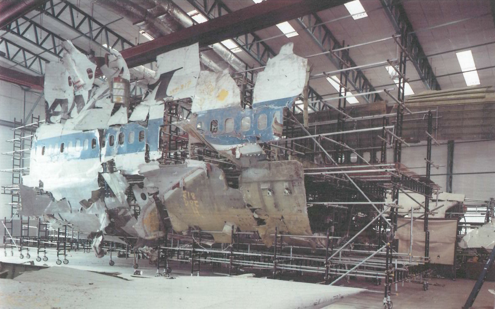

Explosion Over Scotland: the Lockerbie Bombing
Safety
18 June 2021
On Wednesday, December 21, 1988, Pan Am flight 103 departed from London Heathrow at 6:25pm local time. It reaches its cruising altitude of 31,000 feet 31 minutes later, without any incident.
At 7:03 PM, the aircraft was given an ocean crossing clearance, after which ATC did not receive any further communication or radar return. Primary radar detected large pieces of the aircraft spreading out, most of which landed on the town of Lockerbie, Scotland. The falling chunks of airplane, some containing the fuel tanks of the wings, burned as they fell, and when they reached the ground, lit many buildings aflame, many of which burned down to the ground. 11 people on the ground died on the spot, as well as all 259 occupants of the aircraft.
During the investigation, forensic analysis determined that the pattern of the falling debris, when factored into the current weather conditions at the time, indeed showed that it was caused by an explosive device.
The bomb was made of semtex and disguised as a cassette player, and the time control was a digital timer. The luggage was checked into the baggage hold at position 4L. Because the flight was actually delayed by half an hour, the aircraft would have been flying over the Atlantic Ocean if the timing had been as planned, which would have made the investigation significantly more difficult.
A reconstructed, recovered piece of the aircraft involved in Pan Am flight 103. OGL-UK-2.0.
When the bomb exploded, a hole was blown out of the fuselage. The cargo hold and main cabin floor were damaged. As cargo containers and baggage flew out of the aircraft, they flew backwards relative to the aircraft, hitting the tail assembly of the aircraft and damaging it. The hole in the fuselage compromised the structural integrity of the aircraft, causing stress fractures and cracks to propagate through the rest of the fuselage, and the aircraft quickly fell apart under the strong forces of air resistance.
Investigations later showed that the person responsible for the attack, Abdel Basset Ali al-Megrahi, was a Libyan intelligence officer who also served as the head of security for Libyan Arab Airlines.
Following the accident, aviation safety organizations recommended only that airport security should be made more secure, that flight data recorders should have a way to record explosions (to avoid the lengthy and expensive investigation that ensued following Pan Am 103), and that perhaps aircraft should be made stronger and more resistant to explosions.
References
- "ASN Aircraft accident Boeing 747-121A N739PA Lockerbie". Aviation Safety Network. https://aviation-safety.net/database/record.php?id=19881221-0.
- Black, Robert. "The Lockerbie Disaster." Archiv Des Völkerrechts 37, no. 2 (1999): 214-25. http://www.jstor.org/stable/40799238.
- "Report on the accident to Boeing 747-121, N739PA at Lockrebie, Dumfriesshire, Scotland on 21 December 1988". Air Accidents Investigation Branch, Report no. 2/90 (EW/C1094).